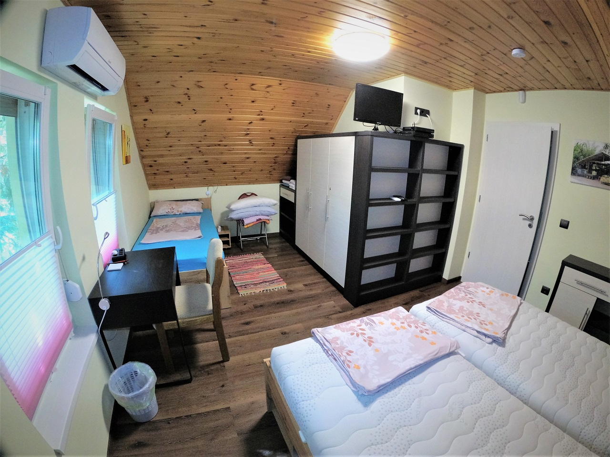

Holtágpart, zárt kert, 85 négyzetméter.
A nyaraló Békésszentandráson áll, a Kákafoki holtág partján, egy természetvédelmi parkban. Nem szobánként adjuk ki: aki jön, az a teljes 85 négyzetmétert kapja, a kerttel, a medencével, a szaunával és a stéggel együtt.
Zárt udvar, körben kerítés, a víz felőli részen még egy alacsonyabb is — a gyerekek és a kutya szem előtt vannak. Reggeli nincs, viszont a konyha úgy fel van szerelve, hogy ne hiányozzon.


5 + 2 személyes férőhely – a gyerekeknek is jut hely.
Két hálószoba az emeleten, a nappali kanapéját pedig kérésre ágyazzuk be. A házirend szerint legfeljebb heten lehettek.

Erkélyes hálószoba
2 főPartra néző panorámaablak

Háromágyas hálószoba
3 főTV

Nappali
+2Csak kérésre ágyazzuk be
Amit a visszatérők mondanak.
„Azt hittük, két napot bírunk ki net nélkül. Négy lett belőle, és a gyerekek a vizet nem akarták otthagyni.”
„A kutyát is vihettük, és tényleg nem volt gond. A zárt kert miatt egész héten nem kellett pórázon tartani.”
„Reggel a stégről indultunk kajakkal, délután a medencénél ültünk. Nem kellett sehova autózni.”
Demóadat: ezek a szövegek a bemutatóhoz készültek, nem valódi vendégektől származnak.
Ami a ház körül van.
Kajak és csónak
Két túrakajak, csónak és vízibicikli a saját stégnél, mentőmellényekkel. A holtág csendes, motorcsónak nem jár rajta.
Horgászat
A stég a kert végében van. Területi engedélyt a faluban lehet váltani — szólj, és megmutatjuk, hol.
Bringa a gáton
Három kerékpár a háznál, a gátoldalon sík út vezet Szarvas és Gyomaendrőd felé.
Amit a foglalás előtt meg szoktak kérdezni.
Lehet szobát bérelni, vagy csak az egész házat?
Hányan férünk el?
A létszám befolyásolja az árat?
Meddig kell fizetni, és mennyit előre?
Mi van, ha le kell mondanunk?
Hány éjszakára lehet foglalni?
A teljes szabályzat a házirendben olvasható.
Nézd meg, mikor van hely.
55 000 Ft / éj-től, a teljes házra. A naptárt mi vezetjük, és 24 órán belül válaszolunk.